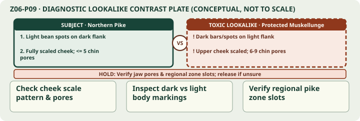

Z06-P09 · Hunting and fishing · New manuscript
Northern Pike, Muskellunge and Protected Slot Identification
Differentiate northern pike from muskellunge and tiger muskellunge accurately so protected trophy muskellunge are never illegally harvested.
When it applies · Minnesota lakes and rivers supporting esocid populations.
Equipment · MN DNR fish ID card, long-nose hemostat/pliers, rigid measuring board.

Actions
- Distinguish northern pike (light bean-shaped spots on a dark background, fully scaled cheeks, five or fewer pores per side under the lower jaw) from muskellunge (dark vertical bars or spots on a light background, scales only on upper cheek, six to nine pores per jaw side).[H06]
- Verify Minnesota regional northern pike management-zone slot regulations and muskellunge high minimum-length limits before fishing.[H01, H06]
- Handle sharp-toothed esocids with wet hands and long-nose unhooking tools—never grip gill arches—to prevent severe lacerations and fish mortality.[H06, M06]
Failure recognition · Confusing an immature muskellunge for a northern pike results in unlawful harvest of a high-minimum-size gamefish and severe hand cuts from gill rakers.[H01, H06]
Verify · Cheek scalation, lower-jaw pore count, body pattern, and zone-specific length slots are confirmed before keeping any pike.[H01, H06]
Stop or change course · Stop and release immediately in water whenever esocid species identity or zone length slot is in doubt.[H01, H06]
Evidence and editorial notes
- H01 · Minnesota DNR · Minnesota Fishing Regulations (Current web edition)
- Section: Licensing, seasons, limits, and waterbody-specific rules · Conditions: Minnesota angling across inland, border, and designated waters
Support: Anglers must hold a valid license unless explicitly exempt and verify current season dates, possession limits, size slots, and special waterbody rules before fishing.
Limitations: Regulations change annually and differ on border waters, trout streams, and tribal/ceded territories; no emergency creates an automatic legal exemption. · Conflicting evidence: None noted.
Editorial note: Establishes Z06 fishing authority gate. · Specialist reviewer: Minnesota DNR fisheries and legal reviewer
Primary source · checked 2026-11-25 - H06 · Minnesota DNR · Fishes of Minnesota Species Reference (Current web edition)
- Section: Positive fish species identification before keeping catch · Conditions: Identifying regional game, rough, and protected fish species
Support: Accurate species identification using fin counts, mouth structure, markings, and body profile is mandatory to comply with limits and protected-species rules.
Limitations: Juveniles and hybrids can resemble restricted species; release immediately when positive identification is uncertain. · Conflicting evidence: None noted.
Editorial note: Connects Z06 identification to lawful harvest. · Specialist reviewer: Fisheries biologist
Primary source · checked 2026-11-25 - M06 · NIH / MedlinePlus · Wounds and Injuries (current web edition)
- Section: Minor Wound Cleaning, Protection, and Infection Red Flags · Conditions: Superficial cuts, scrapes, and abrasions with potable water available
Support: Rinse minor wounds thoroughly with clean potable water, cover with a clean sterile dressing, and monitor for worsening redness, warmth, swelling, pus, red streaks, or fever.
Limitations: Deep punctures, animal bites, retained foreign bodies, or heavily contaminated wounds require clinical evaluation and tetanus review. · Conflicting evidence: None; separates clean potable rinsing from harsh chemical wound scrubbing.
Editorial note: Anchors field wound hygiene and infection escalation cards. · Specialist reviewer: Wilderness medicine and wound care
Primary source · checked 2026-11-24
Source lineage · New manuscript (Z06 P17 species documentation) · Classification · New manuscript.